DICK'S TSHQ
Mobile App
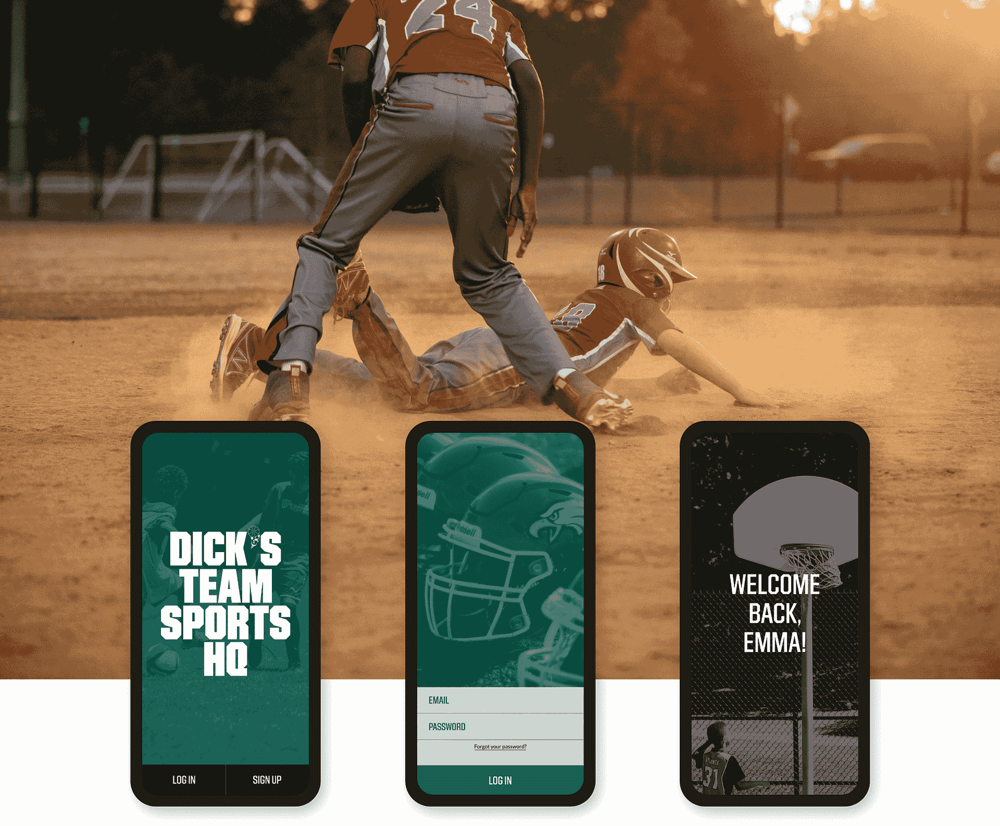
The DICK'S Team Sports Headquarters mobile app is a way for busy parents and coaches to ease the pain of youth sports logistics on the go, and to extend the excitement past the playing field.
I worked as the lead product designer for the project, alongside the mobile development team and the mobile product manager, and was tasked with creating new features for our already established app.
Research
Interviews and surveys with parents, coaches, administrators, and league officials surfaced three recurring pain points:
1. Not having a way to schedule a new event easily.
2. Being unable to track which players were going to show up for a given practice or game.
3. Not being able to quickly message the entire team with a change or update to the schedule.
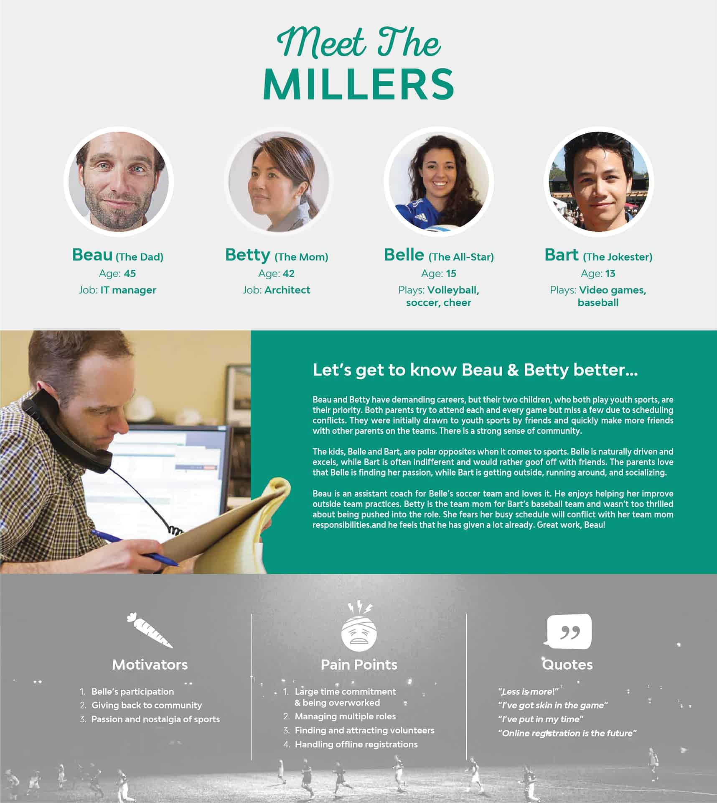
Personas were created to help place a face to our users.
Based off the findings from our research, we saw an opportunity to integrate new functionality that the product initially was missing. The team finalized a plan of action that targeted all of the core problem areas we wanted to solve.
Custom Events
Custom Events lets users create games or practices in seconds. Behind the scenes, the system handles complex constraints: player availability, field scheduling, and time conflicts. Users simply pick an event type, time, and location, and the app does the rest.
Before this feature, users had to manually cross-reference team availability and field schedules on their own.
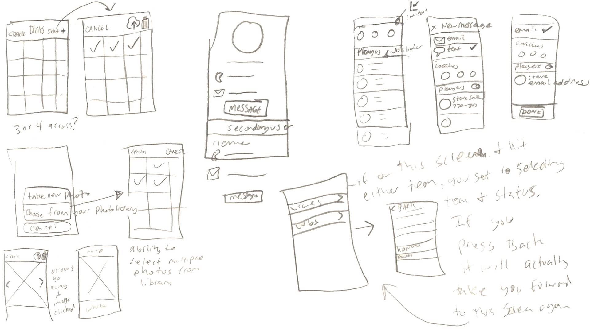
Early sketched wireframes.
The first flow we tackled was for the creation of a new custom event. The pattern of this flow had to be scalable to all of the sports supported by the TSHQ platform. The process for shepherding a user through the event creation process was tough to nail down, and took many iterations and logic hoops to make sense on our end.
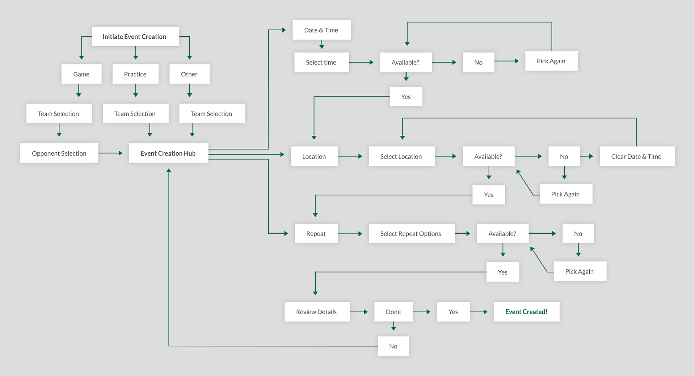
User flow for creating a new custom event.
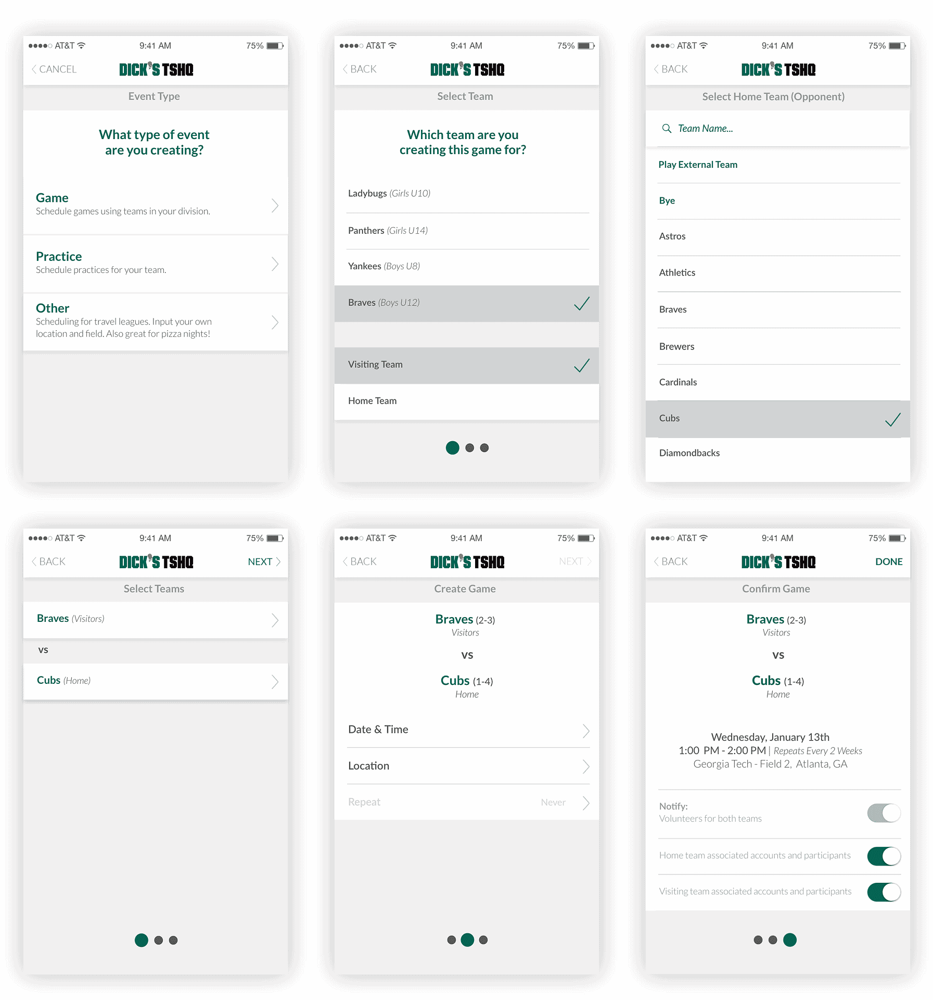
Lo-fi designs.
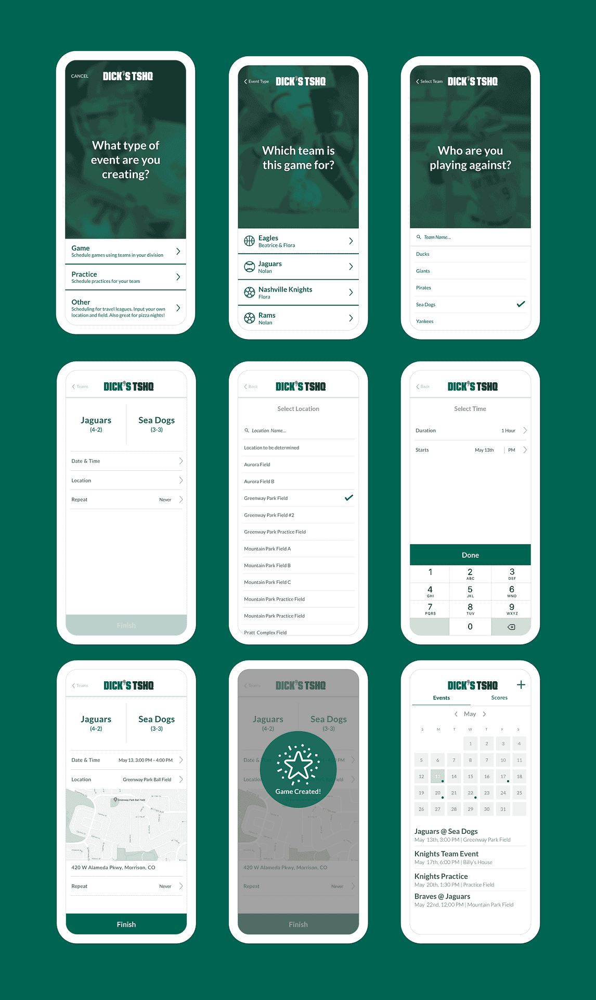
Final designs.
Creating a new custom event.
Picking a time and location.
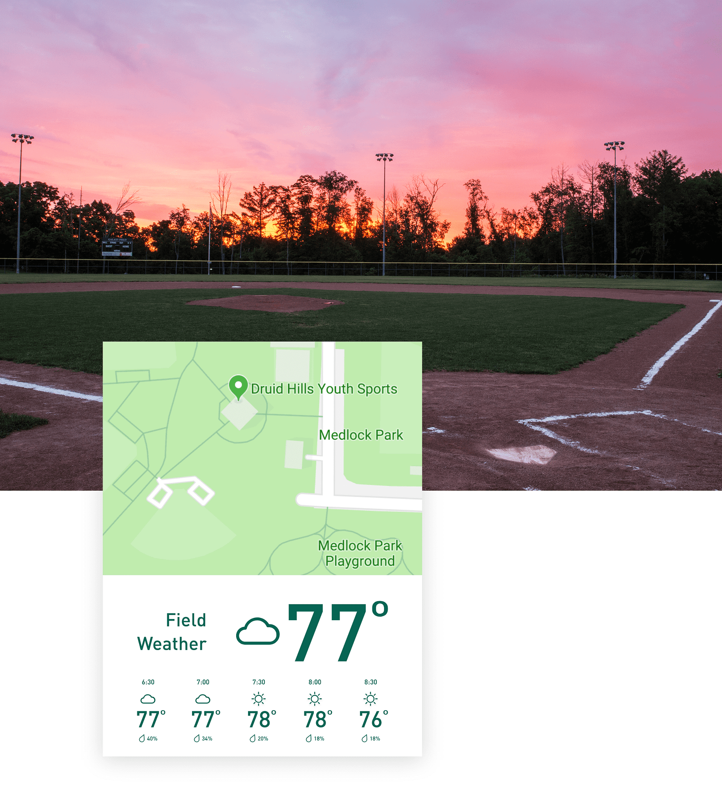
We also surfaced real-time and forecasted weather at the event location — a small detail coaches immediately appreciated.
Score tracking was a top user request. We added a win/loss history so coaches no longer had to keep records manually. In cases where scores weren't entered automatically, admins could input them by hand.
RSVP
A team-wide RSVP system was built so coaches could see attendance at a glance. A 24-hour reminder prompts players and parents to confirm, giving staff time to plan ahead.
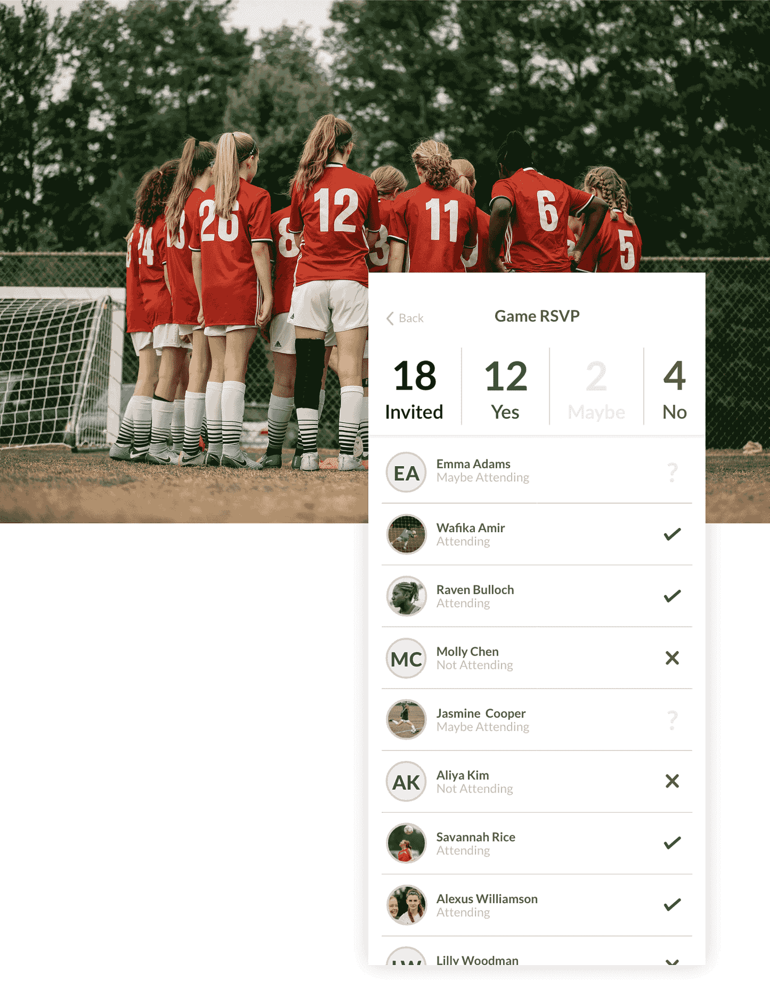
Bulk Messaging
When a schedule changes, coaches need to reach everyone immediately. We built a bulk messaging tool that notifies any or all team members in-app, so no more email chains or individual calls.
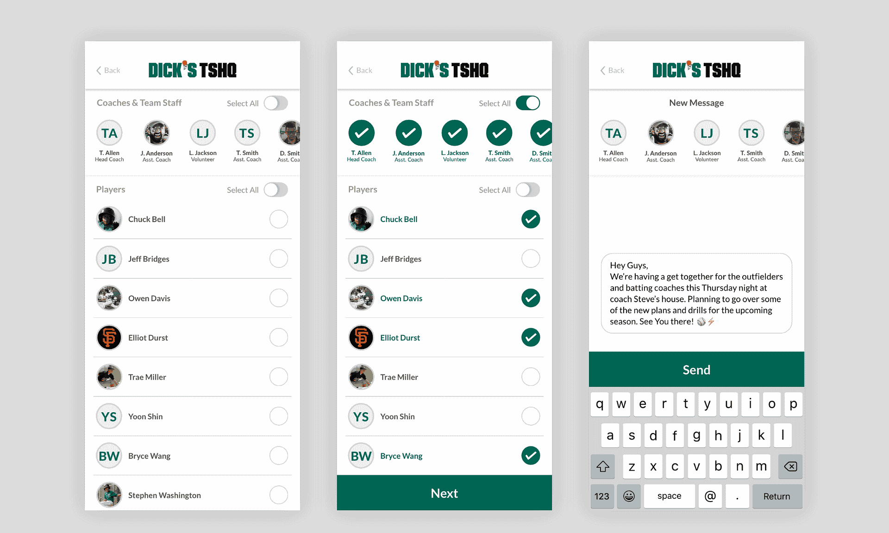
Quickly send out a message to a few or all of the members of your team.
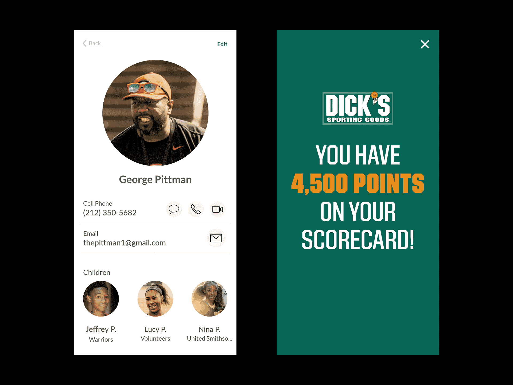
Redesigned profile view for a user, and integration with DICK'S scorecard loyalty rewards program.
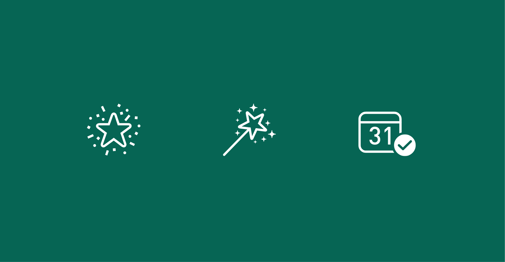
Icons used throughout the app.
Usability Testing
Testing was integrated throughout the process to validate concepts and confirm we were solving the right problems.
Lo-Fi Prototypes — Stakeholders and developers pressure-tested early concepts using Adobe XD and Marvel prototypes to assess feasibility.
User Testing — Guerrilla sessions at a local DICK'S Sporting Goods and in-office lab testing surfaced friction points in the Custom Events flow before they reached production.
Beta Testing — Select power-user admins and parents beta-tested new features with their clubs before launch.
Note: The DICK'S TSHQ mobile app was discontinued in July 2019.